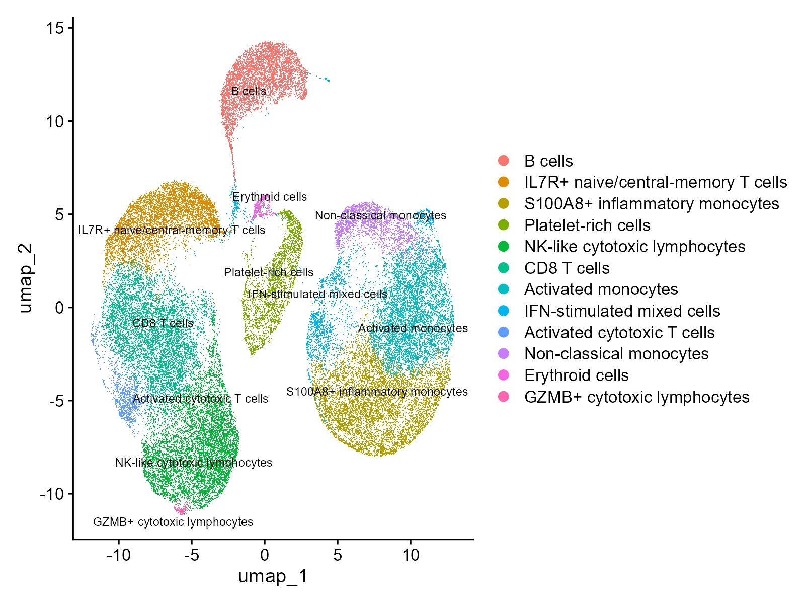
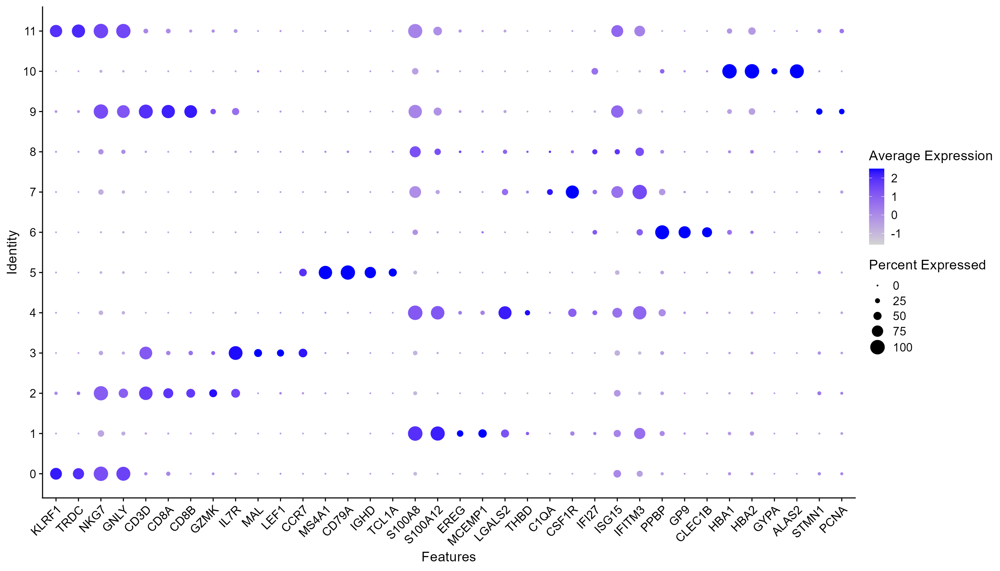
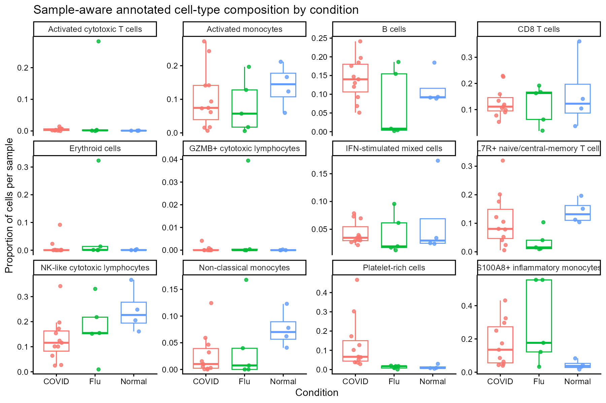
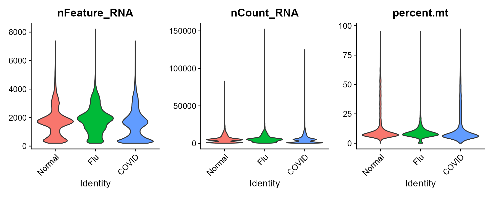
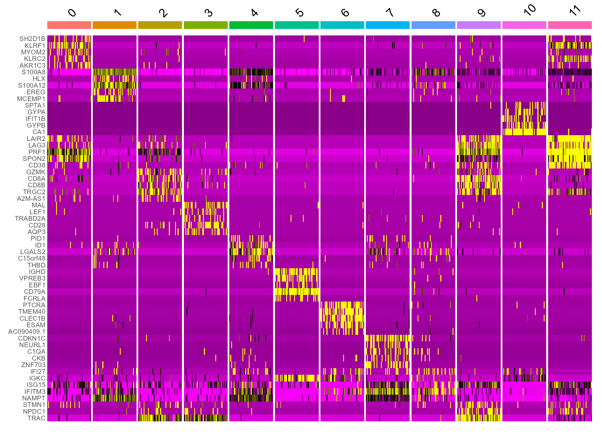

Portfolio summary of the GSE149689 PBMC single-cell workflow.





| File | Contents |
|---|---|
| cluster_annotation_table.csv | Reviewed cluster labels, confidence and supporting markers. |
| top10_markers_by_cluster.csv | Top marker genes for each retained cluster. |
| all_markers.csv | Retained marker-discovery results. |
| cluster_composition_by_group.csv | Descriptive cluster composition by study group. |
| doublet_by_sample.csv | Estimated doublet burden by library. |
The project demonstrates a complete PBMC scRNA-seq workflow and conservative cluster annotation. Group-level composition is descriptive: the COVID-19 libraries are not independent donor replicates because three of eight COVID-19 patients were sampled twice.
Selected figures and tables shown here are retained validated exports. The refactored primary workflow was also rerun successfully end-to-end on 2026-09-06. For code, see analysis/pbmc_analysis.Rmd.